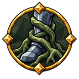
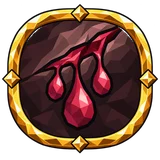
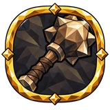
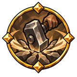
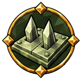
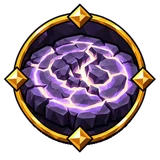
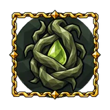

Build-up¶
Makes matching damage apply an ailment more readily. It does not add a missing damage type, increase ailment damage or extend duration; impale uses an application chance instead of a gauge.
How it works¶
How much of the gauge one hit fills, by its damage as a share of the enemy's base health (its maximum health without the mod's difficulty scaling):
| Damage ÷ base health | 5% | 10% | 25% | 50% |
|---|---|---|---|---|
| Filled, +0% build-up | 8% | 16% | 40% | 80% |
| Filled, +100% build-up | 16% | 32% | 80% | 100% |
At 100% the ailment starts, from the strongest matching hit since the gauge began to fill. The gauge then stays full, so every further matching hit applies the ailment again from its own damage. 3 s after the last matching hit the gauge drains, 25% per second. Chill ends when it is empty (at most 7 s after that hit); the other ailments run their own time.
With the other mechanics: Combat and building.
Referenced by¶
Passive Tree¶
Notables¶
| Name | Effect | |
|---|---|---|
| Axe Bite | 20% increased axe damage 40% increased bleed build-up with axes |
|
| Bell's Blow | 80% increased stagger build-up on block recently | |
 |
Binding Reach | 10% increased area of effect 40% increased immobilize build-up |
| Blade's Furrow | 40% increased ailment build-up with swords | |
| Blizzard's Breath | 40% increased chill build-up against wet targets | |
| Bloodied Edge | 40% increased ailment build-up with axes | |
| Boar's Point | +20% spear critical strike damage 40% increased impale build-up with spears |
|
| Bone Beneath Iron | 30% increased blunt damage on block recently 80% increased armour break build-up on block recently |
|
| Broad Fray | 7.5% increased alternative attack speed 10% increased alternative attack area of effect 40% increased stagger build-up with alternative attacks |
|
| Broken Carapace | 40% increased armour break build-up | |
| Campfire Spark | 15% increased fire damage 40% increased burning build-up |
|
| Caustic Wick | 40% increased ailment build-up with bombs +1 bounce |
|
| Circle of the Heavy Blow | 20% increased charged attack area of effect 80% increased ailment build-up with charged attacks |
|
| Cold in the Joints | 40% increased chill build-up against moving targets | |
| Converging Afflictions | 20% increased damage against enemies with an elemental ailment 40% increased burning build-up chill shock |
|
| Crack in the King's Carapace | 40% increased armour break build-up against bosses | |
| Creeping Blight | 40% increased ailment build-up | |
 |
Crimson Thread's Trace | 40% increased bleed build-up |
| Crushing Hold | 40% increased stagger build-up against immobilized enemies 20% increased damage against immobilized enemies |
|
| Deep Puncture | 40% increased impale build-up 20% increased impale damage |
|
| Draugr's Tooth | 40% increased polearm damage 40% increased impale build-up with polearms |
|
 |
Drengr's Maul | 25% increased club damage on block recently 40% increased stagger build-up with clubs |
 |
Earth Shall Tremble | 40% increased stagger build-up with slams |
| Falling Stone's Weight | 120% increased stagger build-up airborne | |
| Faltering Ranks | 40% increased stagger build-up 15% increased knockback on stagger recently |
|
| Fiery Trail | 15% increased fire damage 40% increased burning build-up |
|
| Fire's Bite | 40% increased burning build-up | |
| First Sign of Sickness | 40% increased ailment build-up against full life enemies | |
| Fist's Seal | 40% increased stagger build-up with fists | |
| Forge's Weight | 40% increased armour break build-up with blunt damage | |
| Fresh Incision | 120% increased bleed build-up on parry recently | |
| Frost and Flame | 40% increased ailment build-up 15% increased elemental damage |
|
| Giant's Bruise | 40% increased stagger build-up with clubs | |
| Glassy Frost | 20% increased frost damage against frozen targets 40% increased chill build-up against frozen targets |
|
| Hammerfall | 40% increased stagger build-up 15% increased melee damage +15 Strength |
|
| Hobble | +10% chance to immobilize on hit 40% increased stagger build-up against immobilized enemies |
|
| Hunter's Arrowhead | 40% increased ailment build-up with bows | |
| Hunter's Tooth | 40% increased ailment build-up with spears | |
| Jagged Wound | 20% increased sword damage 40% increased bleed build-up with swords |
|
| Knife's Trace | 40% increased ailment build-up with knives | |
| Knuckle Dance | 5% increased fist attack speed 40% increased stagger build-up with fists |
|
| Last Notch | 40% increased bleed build-up with axes +20% axe critical strike damage |
|
| Last Spark | 80% increased ailment build-up at low eitr | |
| Latch Click | 40% increased ailment build-up with crossbows 30% chance to reload instantly with crossbows |
|
| Lightning Loop | 40% increased shock build-up against wet targets 15% increased shock duration against wet targets |
|
| Lingering Afflictions | 40% increased burning build-up chill shock 15% increased burning duration chill shock |
|
| Lingering Rot | 40% increased ailment build-up | |
| Miner at War | 10% reduced pickaxe stamina cost 40% increased stagger build-up with pickaxes |
|
| Mire's Bite | 20% increased poison build-up 20% increased poison damage over time |
|
| Open Wound | 40% increased bleed build-up against bleeding enemies | |
| Ragged Edge | 40% increased bleed build-up against moving targets | |
| Ragged Sweep | 40% increased stagger build-up with polearms | |
| Raider's Poll | 30% increased axe critical strike chance 40% increased stagger build-up with axes |
|
| Rime on the Wound | 40% increased chill build-up against wet targets | |
| Ring of Bones | 15% increased blunt damage 40% increased stagger build-up |
|
| Ringing Skull | 40% increased stagger build-up | |
| Rune of Judgement | 40% increased ailment build-up with scepters | |
| Runic Imprint | 40% increased ailment build-up with staves | |
| Rusting Sweep | 40% increased armour break build-up 10% increased attack area of effect |
|
| Scarlet Stream | 40% increased bleed build-up 60% increased bleed damage on parry recently |
|
| Seal of Affliction | 40% increased ailment build-up | |
| Second Tremor | 25% increased stagger build-up with aftershocks | |
| Serpent's Cut | 5% increased knife attack speed 40% increased poison build-up with knives |
|
| Shattered Mail | 40% increased armour break build-up | |
| Shoulder-to-Shoulder Strike | 20% increased melee damage with attacks 40% increased stagger build-up in melee |
|
| Shrapnel Wound | 40% increased ailment build-up with bombs 5% increased bomb attack speed |
|
| Sickness of the Last Hour | 40% increased ailment build-up against low life enemies | |
| Sky's Sting | 40% increased shock build-up +25% ailment effect shock |
|
| Spark Beneath the Skin | 40% increased burning build-up | |
 |
Steel Snare | 30% increased trap critical strike chance 40% increased stagger build-up with mines and traps |
| Steel's Tooth | 15% increased piercing damage 40% increased impale build-up |
|
| Stored Fury | 80% increased stagger build-up with charged attacks 30% increased charged attack damage |
|
| Storm Above Water | 40% increased shock build-up against wet targets | |
| Storm's Tremor | 40% increased shock build-up against wet targets | |
| Strength Before the Storm | 120% increased stagger build-up with charged attacks on primary attack hit recently | |
| Stubborn Press | 7.5% reduced alternative attack stamina cost on primary attack hit recently 60% increased stagger build-up with alternative attacks on primary attack hit recently |
|
| Swift Fray | 5% increased melee attack speed 40% increased ailment build-up in melee |
|
| Thicket's Sting | 15% increased poison damage 20% increased poison build-up 20% increased poison damage over time |
|
| Thorn Beneath the Skin | 40% increased impale build-up with thorns | |
| Thunder in the Reeds | 40% increased shock build-up against wet targets | |
| Thunder's Trail | 15% increased lightning damage 40% increased shock build-up |
|
| Troll's Fist | 20% increased fist damage 40% increased stagger build-up with fists +15 Strength |
|
| Troll's Weight | 40% increased stagger build-up with blunt damage | |
| Two-Hander's Weight | 40% increased stagger build-up with two-handed weapons | |
 |
Unsettled Ground | 40% increased ground build-up 25% increased ground ailment effect |
| Vein Fissure | 40% increased stagger build-up with pickaxes | |
| Weightless Hammer | 25% increased Phantom strike stagger build-up | |
| Weighty Anticipation | 80% increased stagger build-up with charged attacks | |
| Winter's Reach | 40% increased chill build-up with ground effects | |
| Wound From the Gloom | 40% increased ailment build-up on an unaware target |
Masteries¶
| Option | Effect | |
|---|---|---|
| Bloodied Charge | 150% increased bleed build-up with axes with charged attacks | |
 |
Choking Roots | 200% increased poison build-up against immobilized enemies |
| Ember of the Maul | Gain 27% of blunt damage as extra fire on your next hit after parrying ×0.55 stagger build-up on your next hit after parrying |
|
| Gathered Rumble | ×0.9 aftershock area of effect 25% increased stagger build-up with aftershocks |
|
| Wedge the Armour | 25% increased armour break build-up per impale on the target |
Small passives¶
| Stat | Nodes |
|---|---|
| 16% increased stagger build-up | 16 |
| 16% increased bleed build-up | 16 |
| 16% increased armour break build-up | 11 |
| 32% increased stagger build-up with charged attacks | 9 |
| 16% increased ailment build-up | 8 |
| 16% increased burning build-up | 8 |
| 16% increased ailment build-up with bombs | 7 |
| 16% increased shock build-up against wet targets | 6 |
| 16% increased stagger build-up with polearms | 6 |
| 16% increased stagger build-up with alternative attacks | 6 |
| 16% increased stagger build-up with pickaxes | 5 |
| 16% increased shock build-up | 5 |
| 16% increased chill build-up | 5 |
| 16% increased ailment build-up with scepters | 5 |
| 16% increased bleed build-up with axes against low life enemies | 5 |
| 48% increased stagger build-up airborne | 4 |
| 16% increased impale build-up | 4 |
| 16% increased burning build-up chill shock | 4 |
| 16% increased ailment build-up on an unaware target | 4 |
| 10% increased Phantom strike stagger build-up | 4 |
| 16% increased ailment build-up with bows | 3 |
| 16% increased ailment build-up against low life enemies | 3 |
| 16% increased stagger build-up against immobilized enemies | 3 |
| 8% increased poison build-up | 2 |
| 16% increased stagger build-up with slams | 2 |
| 16% increased stagger build-up with clubs | 2 |
| 16% increased stagger build-up with fists | 2 |
| 16% increased chill build-up against wet targets | 2 |
| 16% increased ailment build-up with staves | 2 |
| 16% increased impale build-up with thorns | 2 |
| 10% increased stagger build-up with aftershocks | 2 |
| 16% increased ailment build-up against full life enemies | 2 |
| 32% increased ailment build-up at low eitr | 2 |
| 16% increased ailment build-up with spears | 2 |
| 16% increased armour break build-up with blunt damage | 2 |
| 16% increased ailment build-up with swords | 2 |
| 16% increased ailment build-up with axes | 2 |
| 16% increased ailment build-up with crossbows | 2 |
| 16% increased ailment build-up with knives | 2 |
| 16% increased stagger build-up with blunt damage | 2 |
| 16% increased ground build-up | 2 |
| 16% increased impale build-up with spears | 1 |
| 32% increased ailment build-up on sprint recently | 1 |
| 16% increased chill build-up with ground effects | 1 |
Items¶
Uniques (1)¶
| Name | Effect | How to get | |
|---|---|---|---|
| Amber of the First Root | one of 8 stats one of 8 stats including: Allocated Notable Passives in Radius also grant (10–15)% increased ailment build-up |
dropped by The Elder |
Mods (72)
| Mod | Type | Rolls on | From (item level) |
|---|---|---|---|
| #% increased ailment build-up | Suffix | must be weapon | Meadows (1) |
| #% increased ailment build-up | Suffix | must be jewel and Strength–Dexterity jewel | Meadows (1) |
| #% increased ailment build-up against full life enemies | Suffix | must be jewel and Dexterity jewel | Meadows (1) |
| #% increased ailment build-up against low life enemies | Suffix | must be jewel and Strength–Dexterity jewel | Meadows (1) |
| #% increased ailment build-up at low eitr | Suffix | must be jewel and Intelligence jewel | Meadows (1) |
| #% increased ailment build-up at night | Suffix | must be weapon; one of bomb, knife or trap | Meadows (1) |
| #% increased ailment build-up on an unaware target | Suffix | must be weapon; one of bomb, knife or trap | Meadows (1) |
| #% increased ailment build-up on an unaware target | Suffix | must be jewel and Dexterity–Intelligence jewel | Meadows (1) |
| #% increased ailment build-up on crit recently | Suffix | must be weapon; one of blood magic, elemental magic or sceptre | Meadows (1) |
| #% increased ailment build-up on sprint recently | Suffix | must be weapon; one of axe, crossbow or spear | Meadows (1) |
| #% increased ailment build-up with axes | Suffix | must be jewel and Strength–Dexterity jewel | Meadows (1) |
| #% increased ailment build-up with bombs | Suffix | must be jewel and Dexterity–Intelligence jewel | Meadows (1) |
| #% increased ailment build-up with bows | Suffix | must be jewel and Dexterity jewel | Meadows (1) |
| #% increased ailment build-up with crossbows | Suffix | must be jewel and Strength–Dexterity jewel | Meadows (1) |
| #% increased ailment build-up with knives | Suffix | must be jewel and Dexterity–Intelligence jewel | Meadows (1) |
| #% increased ailment build-up with scepters | Suffix | must be jewel and Intelligence jewel | Meadows (1) |
| #% increased ailment build-up with scepters | Suffix | must be jewel and Strength–Intelligence jewel | Meadows (1) |
| #% increased ailment build-up with spears | Suffix | must be jewel and Strength–Dexterity jewel | Meadows (1) |
| #% increased ailment build-up with staves | Suffix | must be jewel and Intelligence jewel | Meadows (1) |
| #% increased ailment build-up with swords | Suffix | must be jewel and Strength–Intelligence jewel | Meadows (1) |
| #% increased armour break build-up | Suffix | must be weapon; one of club, pickaxe, polearm or sword | Meadows (1) |
| #% increased armour break build-up | Suffix | must be jewel and Strength jewel | Meadows (1) |
| #% increased bleed build-up | Suffix | must be weapon; one of axe or sword | Meadows (1) |
| #% increased bleed build-up | Suffix | must be weapon | Meadows (1) |
| #% increased bleed build-up | Suffix | must be jewel and Strength–Dexterity jewel | Meadows (1) |
| #% increased bleed build-up against low life enemies | Suffix | must be weapon; one of axe, crossbow or spear | Meadows (1) |
| #% increased bleed build-up with axes | Suffix | must be jewel and Strength–Dexterity jewel | Meadows (1) |
| #% increased bleed build-up with axes against low life enemies | Suffix | must be jewel and Strength–Dexterity jewel | Meadows (1) |
| #% increased burning build-up | Suffix | must be weapon | Meadows (1) |
| #% increased burning build-up | Suffix | must be jewel and Strength jewel | Meadows (1) |
| #% increased burning build-up chill shock | Suffix | must be jewel and Intelligence jewel | Meadows (1) |
| #% increased chill build-up | Suffix | must be weapon | Meadows (1) |
| #% increased chill build-up | Suffix | must be jewel and Dexterity jewel | Meadows (1) |
| #% increased chill build-up against wet targets | Suffix | must be weapon; one of bare hands, bow or fist weapon | Meadows (1) |
| #% increased chill build-up against wet targets | Suffix | must be jewel and Dexterity jewel | Meadows (1) |
| #% increased ground build-up | Suffix | must be weapon; one of elemental magic, blood magic or sceptre | Meadows (1) |
| #% increased impale build-up | Suffix | must be weapon; one of axe, bare hands, bow, crossbow, polearm, spear, sword or fist weapon | Meadows (1) |
| #% increased impale build-up | Suffix | must be jewel and Strength–Dexterity jewel | Meadows (1) |
| #% increased impale build-up airborne | Suffix | must be weapon; one of axe, crossbow or spear | Meadows (1) |
| #% increased impale build-up with spears | Suffix | must be jewel and Strength–Dexterity jewel | Meadows (1) |
| #% increased impale build-up with thorns | Suffix | must be weapon; one of club or pickaxe | Meadows (1) |
| #% increased impale build-up with thorns | Suffix | must be jewel and Strength–Dexterity jewel | Meadows (1) |
| #% increased melee build-up | Suffix | must be weapon and melee; one of bomb, knife or trap | Meadows (1) |
| #% increased Phantom strike stagger build-up | Suffix | must be jewel and Dexterity jewel | Meadows (1) |
| #% increased poison build-up | Suffix | must be weapon; one of knife | Meadows (1) |
| #% increased poison build-up | Suffix | must be weapon | Meadows (1) |
| #% increased poison build-up | Suffix | must be jewel and Dexterity–Intelligence jewel | Meadows (1) |
| #% increased poison build-up airborne | Suffix | must be weapon; one of bomb, knife or trap | Meadows (1) |
| #% increased shock build-up | Suffix | must be weapon | Meadows (1) |
| #% increased shock build-up | Suffix | must be jewel and Intelligence jewel | Meadows (1) |
| #% increased shock build-up against wet targets | Suffix | must be weapon; one of blood magic, elemental magic or sceptre | Meadows (1) |
| #% increased shock build-up against wet targets | Suffix | must be jewel and Intelligence jewel | Meadows (1) |
| #% increased stagger build-up | Suffix | must be weapon; one of axe, bare hands, club, pickaxe, polearm, trap or fist weapon | Meadows (1) |
| #% increased stagger build-up | Suffix | must be weapon | Meadows (1) |
| #% increased stagger build-up | Suffix | must be jewel and Strength jewel | Meadows (1) |
| #% increased stagger build-up against immobilized enemies | Suffix | must be jewel and Dexterity–Intelligence jewel | Meadows (1) |
| #% increased stagger build-up airborne | Suffix | must be weapon; one of blood magic, elemental magic or sceptre | Meadows (1) |
| #% increased stagger build-up airborne | Suffix | must be jewel and Strength jewel | Meadows (1) |
| #% increased stagger build-up with aftershocks | Suffix | must be jewel and Strength jewel | Meadows (1) |
| #% increased stagger build-up with alternative attacks | Suffix | must be weapon; one of axe, bare hands, bow, club, crossbow, pickaxe, spear or fist weapon | Meadows (1) |
| #% increased stagger build-up with alternative attacks | Suffix | must be jewel and Strength jewel | Meadows (1) |
| #% increased stagger build-up with alternative attacks | Suffix | must be jewel and Strength–Dexterity jewel | Meadows (1) |
| #% increased stagger build-up with blunt damage | Suffix | must be weapon; one of axe, crossbow or spear | Meadows (1) |
| #% increased stagger build-up with blunt damage | Suffix | must be jewel and Strength jewel | Meadows (1) |
| #% increased stagger build-up with blunt damage | Suffix | must be jewel and Strength–Dexterity jewel | Meadows (1) |
| #% increased stagger build-up with charged attacks | Suffix | must be jewel and Strength jewel | Meadows (1) |
| #% increased stagger build-up with charged attacks | Suffix | must be jewel and Strength–Dexterity jewel | Meadows (1) |
| #% increased stagger build-up with clubs | Suffix | must be jewel and Strength jewel | Meadows (1) |
| #% increased stagger build-up with fists | Suffix | must be jewel and Dexterity jewel | Meadows (1) |
| #% increased stagger build-up with pickaxes | Suffix | must be jewel and Strength jewel | Meadows (1) |
| #% increased stagger build-up with polearms | Suffix | must be jewel and Strength–Intelligence jewel | Meadows (1) |
| #% increased stagger build-up with slams | Suffix | must be jewel and Strength jewel | Meadows (1) |
Mentioned in¶
Data from Path of Valheiman 5.3.2, extracted 2026-10-24.